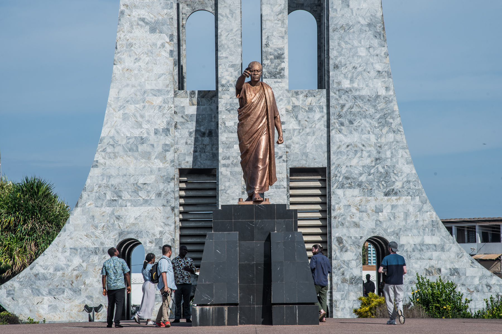

Local Photos of Interest
Ghana Flag

The national flag of Ghana consists of a horizontal triband of red, gold, and green. It was designed in replacement of the British Gold Coast's Blue Ensign. The flag was adopted upon the independence of the Dominion of Ghana on March 6, 1957. It was designed the same year by Theodosia Okoh, a renowned Ghanaian artist.
Kwame Nkrumah Memorial Park & Mausoleum

Kwame Nkrumah Mausoleum Kwame Nkrumah's grave inside the Kwame Nkrumah Memorial in Accra The Kwame Nkrumah Mausoleum and Memorial Park is located in downtown Accra, the capital of Ghana.
Kaneshi Market

Kaneshie is a suburb in the Accra Metropolitan district, a district of the Greater Accra Region of Ghana. The name was derived from a word in the Ga-Adangbe, that is "Kane Shie Shie", meaning "under the lamp" referring to its beginnings as a night market.
Osu Castle

Osu Castle is a castle located in Osu, Ghana, on the coast of the Gulf of Guinea in Africa. A substantial fort was built by Denmark-Norway in the 1660s; thereafter, the fort changed ownership between Denmark-Norway, Portugal, the Akwamu, Britain, and finally post-Independence Ghana.
The National Museum

The National Museum of Ghana is in the Ghanaian capital, Accra. It is the largest and oldest of the six museums under the administration of the Ghana Museums and Monuments Board. The museum building was opened on 5 March 1957 as part of Ghana's independence celebrations.
The Independence Arch

The Independence Arch in Accra, Ghana, is part of the Independence Square which contains monuments to Ghana's independence struggle, including the Independence Arch, Black Star Gate, and the Liberation Day Monument.